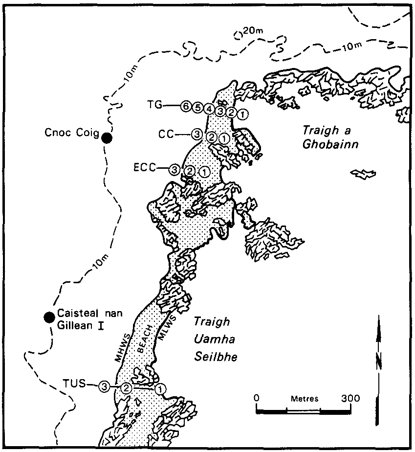
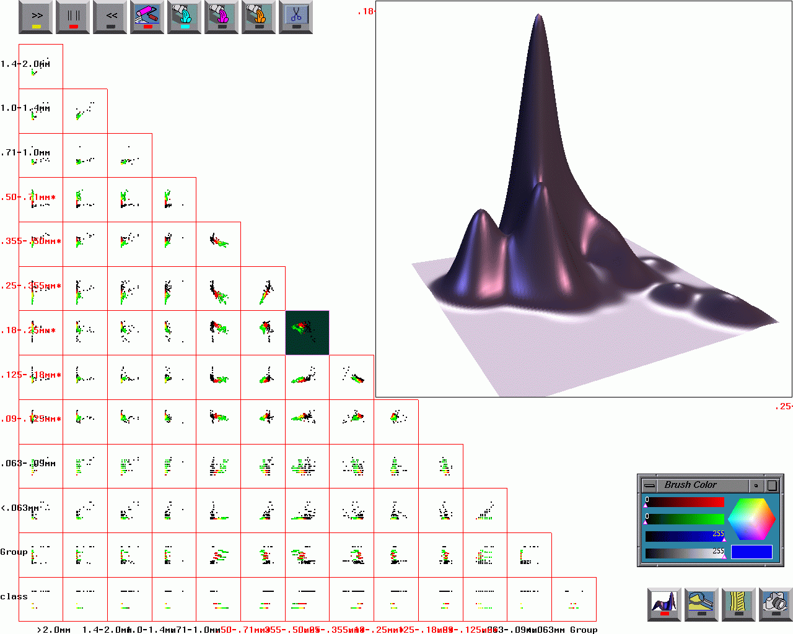

Visual Clustering and Classification:
The Oronsay Particle Size Data Set Revisted


By
Adalbert F. X. Wilhelm
Edward J. Wegman
and
Jürgen Symanzik
ABSTRACT
Interactive statistical graphics can be effectively used to
find natural groupings in observations. In this paper we want to demonstrate
how clustering and classification can be done
with three approaches based on highly interactive graphical environments:
high-dimensional scatterplots as available in
XGobi,
parallel coordinate plots as available in
ExplorN,
and linked low-dimensional views as available in
Manet.
We will point out the strengths and the
weaknesses of these techniques by comparing their behavior
when applied to the Oronsay particle size data set.
Keywords:
High Interaction Graphics, Grand Tour, Parallel Coordinate Plots,
Linked Views,
XGobi,
ExplorN,
Manet.
JOURNAL AND TECHNICAL REPORT
This Web site comes in two parts:
- the final
journal version
of our paper including all color graphics, and
- the full size
technical report
with additional graphics and sections that are not available
in the journal version.
REFERENCES
The Oronsay particle data set has been extensively analyzed
in the literature. Main references are:
- Fieller, N. R. J., Flenley, E. C., and Olbricht, W. (1992),
Statistics of Particle Size Data, Journal of the Royal
Statistical Society, Series C (Applied Statistics)
41(1), 127-146.
- Fieller, N. R. J., Gilbertson, D. D., and Olbricht, W. (1984),
A new Method for Environmental Analysis of Particle Size
Distribution Data from Shoreline Sediments,
Nature 311, 648-651.
- Fieller, N. R. J., Gilbertson, D. D., Olbricht, W., and Timmins, D. A. Y. (1983),
A Computer-Compatible Archive of Sedimentological Data from Oronsay,
Inner Hebrides, Archive No. 2, Department of Prehistory and
Archaeology, University of Sheffield, Sheffield, UK.
- Fieller, N. R. J., Gilbertson, D. D., and Timmins, D. A. Y. (1987),
Sedimentological Analyses of the Shell-Midden Sites, in P. A. Mellars, ed.,
Excavations on Oronsay: Prehistoric Human Ecology on a Small Island,
Edinburgh University Press, Edinburgh, UK, pp. 78-90.
- Flenley, E. C., and Olbricht, W. (1993), Classification of
Archaeological Sands by Particle Size Analysis, in O. Opitz, B. Lausen,
and R. Klar, eds, Information and Classification. Concepts, Methods
and Applications. Proceedings of the 16th Annual Conference of the
Gesellschaft für Klassifikation e. V., Springer,
Berlin, Heidelberg, pp. 478-489.
- Olbricht, W. (1982), Modern Statistical Analysis of
Ancient Sand, MSc Thesis, University of Sheffield,
Sheffield, UK.
- Timmins, D. A. Y. (1981), Study of Sediment in Mesolithic
Middens on Oronsay, MA Thesis, University of Sheffield,
Sheffield, UK.
DATA
You can download the Oronsay data files through this site:
- Oronsay.raw_data:
This is the raw particle size data used for our analysis.
This file has been processed for use in XGobi (see the next
4 files below).
The data has been updated similarly for use in ExplorN and Manet.
- Oronsay.dat: This file
contains the space delimited particle sizes plus two extra
columns for all 226 samples. While some of the references speak
of 227 samples, this data set does not contain sample CC3_9.
Exactly these 226 samples are used in Flenley and Olbricht (1993).
The first column contains weights for particle sizes >2.0mm,
the second column weights for particle sizes 1.4-2.0mm, and so on.
Column 13 is the total weight for this sample
and column 14 is the group identifier.
- Oronsay.col: These are the
14 variable names for the particle size data (including total weight
and group identifier).
- Oronsay.row: These are the
individual site codes and identifiers for each of the 226 samples.
- Oronsay.colors: Within each
of the 22 known groups, the first two samples have been brushed
as a training set. Yellow represents the archaeological training samples,
red the CC beach samples, Orange the CC dune samples, green the
CNG beach samples, and blue the CNG due samples.
ACKNOWLEDGMENTS
We would like to thank
Nick Fieller
for providing us with the
Oronsay particle size data set (including the permission to post
it on this Web site) and additional background information.
Thanks are also due to Walter Olbricht for his additional comments
and to Qiang Luo who assisted with the preparation of data
and the analysis.
Last Update October 12, 1999